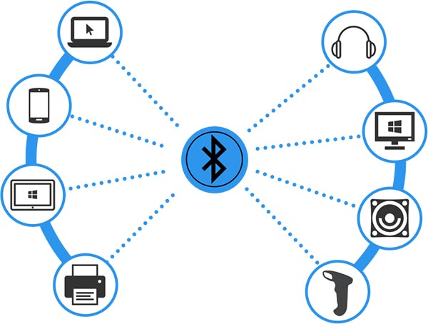

Que es la red pan

Una red de área personal (PAN) conecta dispositivos electrónicos dentro del área inmediata de un usuario. El tamaño de una PAN oscila entre unos centímetros y unos metros. Uno de los ejemplos más habituales de PAN en el mundo real es la conexión entre un auricular Bluetooth y un teléfono inteligente.
Las redes PAN son aquellas que conectan dispositivos a corta distancia, generalmente en un área cercana a una persona. Estas redes se utilizan para conectar dispositivos como teléfonos móviles, tablets, ordenadores y otros dispositivos electrónicos personales.
¿Cómo funcionán las red pan?
Una red PAN puede establecerse mediante el uso de una distribución cableada o señal wireless. Esta última es más común actualmente y se la conoce como WPAN (del inglés Wireless Personal Area Network); de hecho, en los último años alguno de los dispositivos de oficina, como las impresoras, pueden ser utilizadas mediante wifi, aunque la idea en la que se basa no es una novedad, ya que estos podían ser parte de una red LAN mediante cableado.
Las redes siguen protocolos, que definen cómo se envían y reciben las comunicaciones. Estos protocolos permiten la comunicación de dispositivos. Cada dispositivo en una red utiliza un Internet Protocol o dirección IP, una cadena de números que identifica de forma única un dispositivo y permite que otros lo reconozcan.
Características de las red pan
Alcance limitadoEstas redes están diseñadas para conectar dispositivos cercanos, generalmente dentro de un radio de unos pocos metros. Las redes PAN son ideales para la conexión y comunicación entre dispositivos personales, como teléfonos inteligentes, tabletas, auriculares, etc.